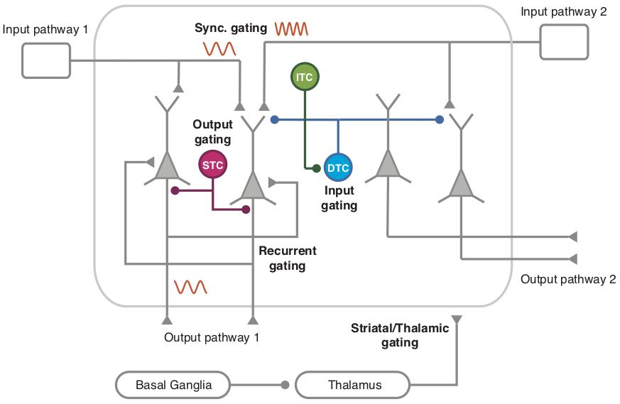

Chapter 9. Meta-Learning
Contents
Chapter 9. Meta-Learning#
Contents#
Tuning meta-parameters
Reuse of representations
Reuse of models
Modularity and compositionality
We learn to understand and control many things in our life and learning one task often makes learning another task easier. This observation has been a target of study under variaous keywords, such as
Lifelong learning (Thrun 1996)
Meta learning (Doya 2002)
Transfer learning (Taylor & Stone 2009)
Tuning meta-parameters#
Learning algorithms change the parameters of the model, such as the weights of neural networks, but most algorithms have higher-level paramters that control how learning goes on. They are called hyperparamters or metaparameters and control the balance of various trade-offs. Those meta paramteres are often tuned by machine learning engineers based on domain knowldge or past experience, but making the paramter tuning automatic or unnecessary is an important research topic.
How that is done in our brain is also an important question in neuroscience.
Learning Rate#
The learning rate parameter deals with the trade-off of quick learning and stable memory. Stochastic gradient decent and other online learning algorithms take the form $\( w(t+1) = w(t) + \alpha(u(t) - w(t)) \)\( where \)u(t)$ is the input for the parameter update.
This can be re-formulated as $\( w(t+1) = \sum_{s=1}^t \alpha(1-\alpha)^{t-s}u(s)\)\( showing that \)w\( is an exponentially weighted average of past inputs \)u(s)\( with the decaying factor \)1-\alpha\(. With a large \)\alpha$ close to one, past experiences are quickly forgotten.
To effectively average over about \(N\) past samples, the learning rate has to be set at the scale of \(\alpha\simeq\frac{1}{N}\)
In a stationary environment, a good strategy is to take an even average of past inputs $\( w(t+1) = \frac{1}{t}\sum_{s=1}^t u(s) \)\( This can be realized by hyperbolically decaying learning rate \)\alpha=\frac{1}{t}\( because \)\( w(t+1) = \frac{1}{t}(\sum_{s=1}^{t-1}u(s) + u(t)) = \frac{1}{t}((t-1)w(t) + u(t)) \)\( \)\( = w(t) + \frac{1}{t}(u(t) - w(t)) \)$
Exploration-Exploitation#
In reinforcement learning, the balance of exploration of novel actions and exploitation by an action that is known to be good is controlled by \(\epsilon\) in \(\epsilon\)-greedy action selection and the inverse temerature \(\beta\) in the softmax or Boltzmann action selection $\( p(a|s) = \frac{e^{\beta Q(s,a)}}{\sum_{a'\in\c{A}}e^{\beta Q(s,a')}} \)\( where \)\c{A}$ is the set of available actions.
This can be seen as maximization of the negative free energy $\( –F = E[ Q(s,a) - \frac{1}{\beta}\log p(a|s)] \)$ which is a sum of expected action value and the entropy of action selection probability.
As learning goes on, to reduce exploration and to promote exploitation, the inverse temperature is gradually increased, or the temperature \(\tau=\frac{1}{\beta}\) is reduced. This is called annealing.
Another ways to promote exploration in early stage of learning is to give an additional reward for the states or stat-action pairs that have not been tried before. This is known as novelty bonus (Dayan). A similar effect can be realized by optimistic initial setting of the value functions.
Further sophistication is Bayesian reinforcement learning which tries to learn not just the expected reward but the distribution of the reward \(P(r|s,a)\). Starting from a flat prior distribution, as the reward distribution becomes sharper, there is less need for exploration. Knowledge of the reward distribution further allows optimistic, risk-seeking action selection or conservative, risk-avoiding action selection.
Temporal discount factor#
The temporal discount factor \(\gamma\) defines the temporal scale of maximization of future rewards $\( E[ r_t + \gamma r_{t+1} + \gamma^2 r_{t+2} + ...] \)$
A low setting of \(\gamma\) can result in a short-sighted or impulsive behaviors which neglect long-term consequences of an action.
Although a high setting of \(\gamma\) promotes a long-term optimal behaviors, setting \(\gamma\) very close to one can make prediction more demanding, thus takes long time to learn.
For an average reward \(r_t\sim r_0\), the value function takes the order of $\( V \simeq \frac{r_0}{1-\gamma} \)\( which grows very large as \)\gamma\( is set close to one. Then the temporal difference error \)\( \delta_t = r_{t+1} + \gamma V(s_{t+1}) - V(s_t) \)\( is dominated by the temporal difference of value functions, responding less to the encountered reward \)r_{t+1}$.
If it is known that approximately \(n\) steps are necessary from the initial state of the goal states, the temporal discounting should be set at the order of \(\frac{1}{1-\gamma}=n\), i.e., \(\gamma=1-\frac{1}{n}\).
Self-tuning of meta-parameters#
Can we use reinforcement learning or evolutionary algorithms to find good meta-paramteres for a given range of tasks or environments?
That idea had been tested with reinforcement learning (Schweighofer, Doya 2003) and evolutinary algorithm (Elfwing et al. 2011).
More recently, the idea of automatizing parameter tuning and model selection has been addressed in the project of AutoML
Neuromodulators#
Neuromodulators are a subset of neurotransmitters that are not simply excitatory or inhibitory, but have complex, sometimes long lasting effects depending on the receptors. The most representative neuromodulators are dopamine (DA), serotonin (5HT), noradrenaline (NA) (also called norepinephrine (NE)), and acetylcholine (ACh).
The neurons that synthesize those neuromodulators are located in specific areas in the brain stem and their axons project broadly to the cerebral cortex and other brain areas.
From these features, neuromodulators are proposed to broadcast some signals and to regulate some global parameters of brain function.
Major neuromodulators and their projections. Red: dopamine (DA) from ventral tegmental area (VTA) and the substantia nigra pars compacta (SNc). Green: serotonin (5HT) from the dorsal raphe (DR) and median raphe (MR) nuclei. Blue: noradrenaline (NA), or norepinephrine (NE), from the locus ceorelues (LC). Magenta: acetylcholine (ACh) from the septum (S), mynert (M) nucleus, and the pedunculo pontine nucleus (PPTN). (from Doya, 2002).
Dopamine neurons in the ventral tegmental area (VTA) and the substantia nigra pars compacta (SNc) have been shown to represent the reward prediction error signal, the most important global learing signal \(\delta\) in reinforcement learning (Schultz 1998).
Building up on this notion, Doya (2002) proposed other major neuromodulators also encode and regulate global signals in reinforcement learing, namely, sorotonin for the temporal discount factor \(\gamma\), noradrenaline for the inverse temperature \(\beta\), and acetylcholine for the learning rate \(\alpha\).
Serotonin and delayed reward#
Motivated by the hypothesis, there has been a series of studies assessing the role of serotonin in regulating the behaviors for delayed rewards.
For example, Miyazaki et al. (2011) showed that serotonergic neurons int the dorsal raphe nucleus increase firing when rats kept weighting for a food pellet or water spout to come out.
More recently, it was shown in multiple laboratories that optogenetic activation of dorsal raphe serotoin neurons promote behaviors for delayed rewards (Miyazaki et al. 2014, 2018; Lottem et al. 2018).
However, the dorsal raphe serotonin neurons have been implicated in other behaviors as well, such as flexible switching of choice in the reversal task (Matias et al. 2017).
Acetylcholine, noradrenaline and learning#
Acetylcholine have been shown to facilitate learning from new sensory inputs (Hasselmo & Sarter 2010).
Noradrenalinergic neurons in the locus coeruleus has been shown to have phasic and tonic modes of operation. While phasic activation was suggested to promote selection of the optimal response for exploitation (Usher et al. 1999), tonic activities have been suggested to promote exploration of suboptimal actions (Aston-Jones & Cohen 2005).
Based on a Bayesian framework of learning, Yu and Dayan (2005) proposed a theory of differential roles of acetylcholine and noradrenaline; acetylcholine for expected uncertainty and noradrenaline for unexpected uncertainty.
Sensory representation learning#
When animal learn a behavior, such as classical conditioning, a big challenge is to figure out which of the sensory inputs, such as visition, audition and odor, is relevant for any responses. One animal realizes which senosory input to pay attention to, such as sound, subsequent learning can be much faster, for example, linking other sounds to action or reward.
Courville and colleageus derived a Bayesian framework of how an animal infere the hiddden cause of stimuli and reward (Courville et al. 2005).
Having appropriate set of sensory features is critical in pattern recognition and other tasks (Bengio et al. 2012). A common practice in visual object recognition is to re-use the features learned in the hidden layers of a deep neural network trained by a big dataset by re-training only the weights in the upper layers for a new but similar task.
Models and latent variables#
In reinforcement learing, an agent learns a policy given the environmental dynamics and reward setting. In the model-free approach, an agent learns a policy for each setting of the environemt.
In the model-based approach, an agent learns internal models of the state dynamics and reward function, and use internal computation to infer what is the best action. This indirectness gives computational burden for real-time execution, but may provide a benefit in adaptiation, such as in the case where only the goal or the reward setting is changed but the state dynamics stays the same.
The behavioral benefit and neural mechanisms for model-based reinforcement learning were demonstrated by Glascher et al. (2010) by asking Caltech students to first learn a tree-like state transition, then disclosing the rewards at leaf nodes and finally letting them to find the right action seqeunce.
Daw et al. (2011) took a similar two-step task and analyzed how subjects respond to a large reward following a rare transition in the first step.
Wang et al. (2018) trained a recurrent neural network to perform a reinforcement learning task with variable parameters, such as variable reward probabilities for left and right choices in a bandit task. After sufficient training, they found that the network cand adapt to new parameter setting even when their weights are fixed. That was because some of the some hidden neurons had learned to change their statew depending of the laten variable of the task, such as the reward probabilities to two options, and the network output was changed by the latent variables.
Modularity and compositionality#
In learning the model of the environment, rather than to learn a monolithic model to predict everything, it is more practical to learn multiple models for different situations or aspects of the environment and select or combine them as required.
Learning and use of modular internal models have been demonstrated, for eaxample, in motor control tasks (Ghaharamani & Wolpert 1997). Such notions promoted computational architecutres for modular learning and control, such as the MOSAIC architecture (Wolpert et al. 2003).
In reinforcement learning and optimal contorol theory, how to design controllers that can be efficiently combined is an area of active research (Todorov 2009).
Yang et al. (2018) trained a single recurrent neural network to perform 20 different cognitive tasks and anlayized how the hidden neurons are used in different tasks. They found different sets of hidden neurons develp into multiple clusters specialized for different cognitive processes, allowing compositional reuse of learned modules.
In cognitive science, compositionality of models and skills is also regarded as a major component in human intelligence (Lake et al. 2017).
Pathway gating#
Most studies of functional MRI assume that, when a subject is asked to perform a certain task, computational modules requires for that are activated and identify brain areas specialized in particular computations. However, it is unknown how those required modules are activated and connected appropriately. This poses us interesting problems both at computational and biophysical implementation levels.
Wang and Yang (2018) termed this as the pathway gating problem. They considered possible biophysical mechanisms, focusing on the roles of different inhibitory neurons in the cortical circuit.
 Possible mechanisms of information gating in the brain. (Wang & Yang, 2018).
Fernando et al. (2017) proposed Pathnet to use evolutionary optimization to find out which pathway in a deep neural network is to be used for each particular task.
References#
Thrun S, Pratt L, eds. (1998) Learning to Learn: Springer.
Taylor ME, Stone P (2009) Transfer learning for reinforcement learning domains: A survey. Journal of Machine Learning Research, 10:1633-1685.
Doya K (2002) Metalearning and Neuromodulation. Neural Networks, 15:495–506.
Doya K (2008) Modulators of decision making. Nature neuroscience,11:410-416.
Schweighofer N, Doya K (2003) Meta-learning in reinforcement learning. Neural Networks, 16:5-9.
Elfwing S, Uchibe E, Doya K, Christensen HI (2011) Darwinian embodied evolution of the learning ability for survival. Adaptive Behavior 19:101-120.
Learning rate and exploration#
Kakade S, Dayan P (2002) Dopamine: generalization and bonuses. Neural Networks 15:549-559.
Serotonin:#
Miyazaki K, Miyazaki KW, Doya K (2011) Activation of dorsal raphe serotonin neurons underlies waiting for delayed rewards. The Journal of neuroscience, 31:469-479.
Miyazaki KW, Miyazaki K, Tanaka KF, Yamanaka A, Takahashi A, Tabuchi S, Doya K (2014) Optogenetic activation of dorsal raphe serotonin neurons enhances patience for future rewards. Current biology, 24:2033-2040.
Miyazaki K, Miyazaki KW, Yamanaka A, Tokuda T, Tanaka KF, Doya K (2018) Reward probability and timing uncertainty alter the effect of dorsal raphe serotonin neurons on patience. Nature communications, 9:2048.
Lottem E, Banerjee D, Vertechi P, Sarra D, Lohuis MO, Mainen ZF (2018) Activation of serotonin neurons promotes active persistence in a probabilistic foraging task. Nature communications, 9:1000.
Acetylcholine and noradrenaline (norepinephrine)#
Hasselmo ME, Sarter M (2011). Modes and models of forebrain cholinergic neuromodulation of cognition. Neuropsychopharmacology, 36, 52-73. http://doi.org/10.1038/npp.2010.104
Usher M, Cohen JD, Servan-Schreiber D, Rajkowski J, Aston-Jones G (1999). The role of Locus Coeruleus in the regulation of cognitive performance. Science, 283, 549-554. http://doi.org/10.1126/science.283.5401.549
Aston-Jones G, Cohen JD (2005). An integrative theory of locus coeruleus-norepinephrine function: adaptive gain and optimal performance. Annual Reviews in Neuroscience, 28, 403-50. http://doi.org/10.1146/annurev.neuro.28.061604.135709
Yu AJ, Dayan P (2005). Uncertainty, neuromodulation, and attention. Neuron, 46, 681-92. http://doi.org/10.1016/j.neuron.2005.04.026
Representation learning#
Courville AC, Daw ND, Touretzky DS (2006) Bayesian theories of conditioning in a changing world. Trends in Cognitive Sciences 10:294-300.
Bengio Y, Courville A, Vincent P (2013) Representation learning: a review and new perspectives. IEEE Trans Pattern Anal Mach Intell 35:1798-1828.
Wang JX, Kurth-Nelson Z, Kumaran D, Tirumala D, Soyer H, Leibo JZ, Hassabis D, Botvinick M (2018). Prefrontal cortex as a meta-reinforcement learning system. Nat Neurosci, 21, 860-868. https://doi.org/10.1038/s41593-018-0147-8
Yang GR, Joglekar MR, Song HF, Newsome WT, Wang XJ (2019). Task representations in neural networks trained to perform many cognitive tasks. Nat Neurosci. https://doi.org/10.1038/s41593-018-0310-2
Model-based strategies#
Glascher J, Daw N, Dayan P, O’Doherty JP (2010). States versus rewards: dissociable neural prediction error signals underlying model-based and model-free reinforcement learning. Neuron, 66, 585-95. http://doi.org/10.1016/j.neuron.2010.04.016
Daw ND, Gershman SJ, Seymour B, Dayan P, Dolan RJ (2011). Model-based influences on humans’ choices and striatal prediction errors. Neuron, 69, 1204-15. https://doi.org/10.1016/j.neuron.2011.02.027
Modularity and compositionality#
Ghahramani Z, Wolpert DM (1997). Modular decomposition in visuomotor learning. Nature, 386, 392-395. http://doi.org/10.1038/386392a0
Wolpert DM, Doya K, Kawato M (2003). A unifying computational framework for motor control and social interaction. Philos Trans R Soc Lond B Biol Sci, 358, 593-602. http://doi.org/10.1098/rstb.2002.1238
Todorov E (2009). Efficient computation of optimal actions. Proc Natl Acad Sci U S A, 106, 11478-83. https://doi.org/10.1073/pnas.0710743106
Lake BM, Ullman TD, Tenenbaum JB, Gershman SJ (2017). Building machines that learn and think like people. Behav Brain Sci, 40, e253. http://doi.org/10.1017/S0140525X16001837
Pathway gating#
Wang XJ, Yang GR (2018). A disinhibitory circuit motif and flexible information routing in the brain. Curr Opin Neurobiol, 49, 75-83. https://doi.org/10.1016/j.conb.2018.01.002
Fernando C, Banarse D, Blundell C, Zwols Y, Ha D, Rusu AA, Pritzel A, Wierstra D (2017). Pathnet: Evolution channels gradient descent in super neural networks. arXiv:1701.08734.
Exercise#
Come up with daily-life examples of “learning to learn” and consider what computational processes may be involved.